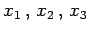
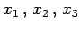
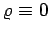

Inhalt Index DeskTop Bronstein

 Differentialgleichungen Partielle Differentialgleichungen Partielle Differentialgleichungen aus Naturwissenschaft und Technik
Differentialgleichungen Partielle Differentialgleichungen Partielle Differentialgleichungen aus Naturwissenschaft und Technik


Potentialgleichung oder POISSONsche Differentialgleichung wird die lineare partielle Differentialgleichung zweiter Ordnung
genannt, die die Bestimmung des Potentials u(x) eines skalaren Feldes ermöglicht, das von einer Punktfunktion  erzeugt wird, wobei x für die Koordinaten  steht und
erzeugt wird, wobei x für die Koordinaten  steht und  der LAPLACE-Operator ist. Die Lösung, das Potential uM(x1,x2,x3) im Punkt
der LAPLACE-Operator ist. Die Lösung, das Potential uM(x1,x2,x3) im Punkt  , wird im Abschnitt Differentialgleichungen der Feldtheorie behandelt.
, wird im Abschnitt Differentialgleichungen der Feldtheorie behandelt.
Für die homogene Differentialgleichung mit  ergibt sich die LAPLACEsche Differentialgleichung
Die Differentialgleichungen (9.108a) und (9.108b) sind vom elliptischen Typ.